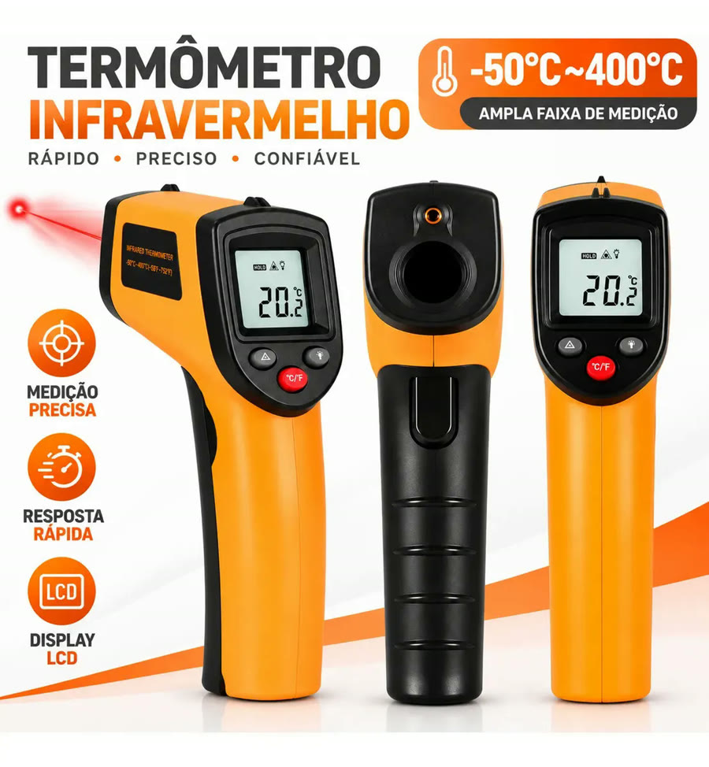
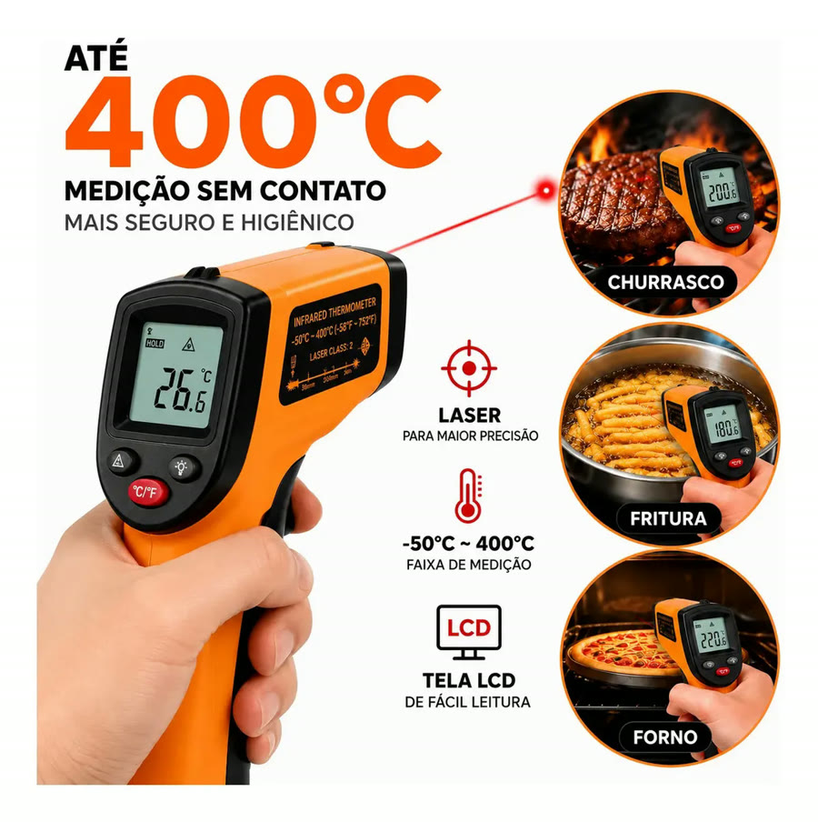
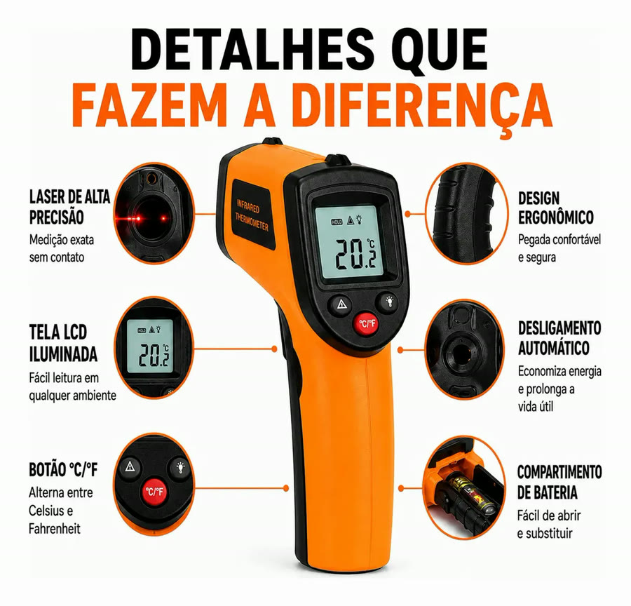
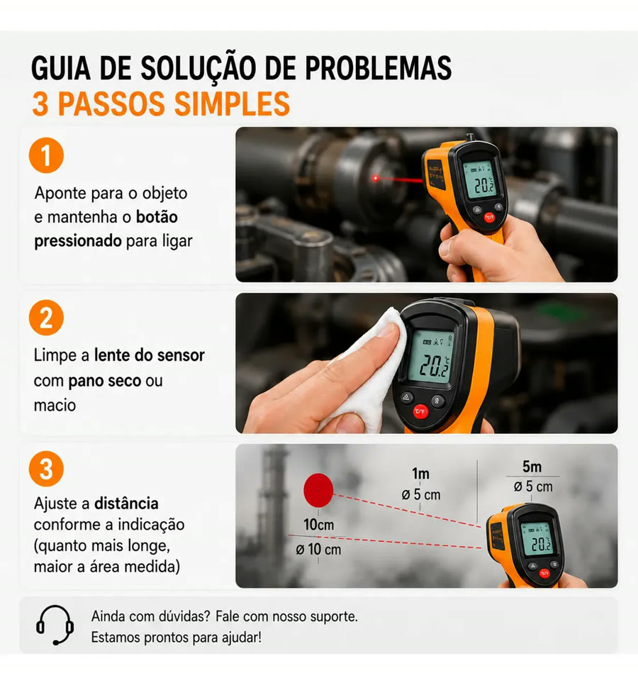
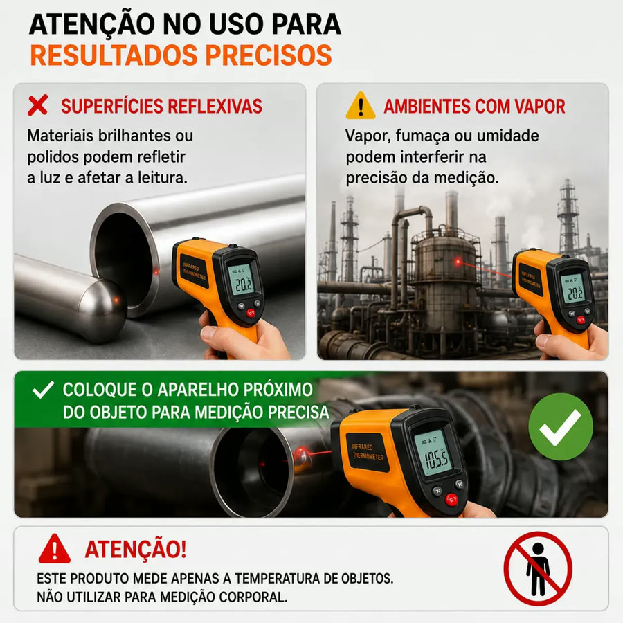
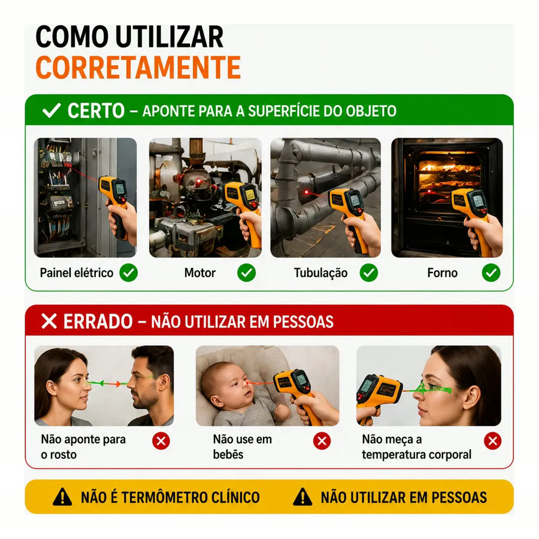

Achado nº 92
Pingar água no óleo pra ver se esquentou?
Termômetro infravermelho para cozinha (até 400 °C)
★ 4,8 · mais de 4 mil avaliações no Mercado Livre






O que diz a página oficial do produto
- É um termômetro digital infravermelho em formato de pistola, que mede a temperatura sem encostar
- Segundo o anúncio, mede de -50 °C a 400 °C, com precisão de 1,5 °C
- Segundo o anúncio, é só apontar, apertar o botão e ler o resultado na tela LCD
- Tem um laser de mira para indicar o ponto medido
- Segundo o anúncio, desliga sozinho para economizar bateria
- Funciona a pilha, que segundo o anúncio vem incluída
- Tem botão para alternar entre °C e °F
- O anúncio avisa que não serve para medir temperatura do corpo e que não se deve apontar para pessoas
- Segundo o anúncio, serve para frituras, churrasco, fornos, grelhados e assados
- No Mercado Livre, tem nota 4,8 com mais de 4 mil avaliações e mais de 50 mil vendidos
Link de afiliado: se você comprar por ele, a Achadaria pode receber uma comissão, sem custo extra para você. Preço, estoque e entrega são da loja e podem mudar; confira lá antes de comprar.